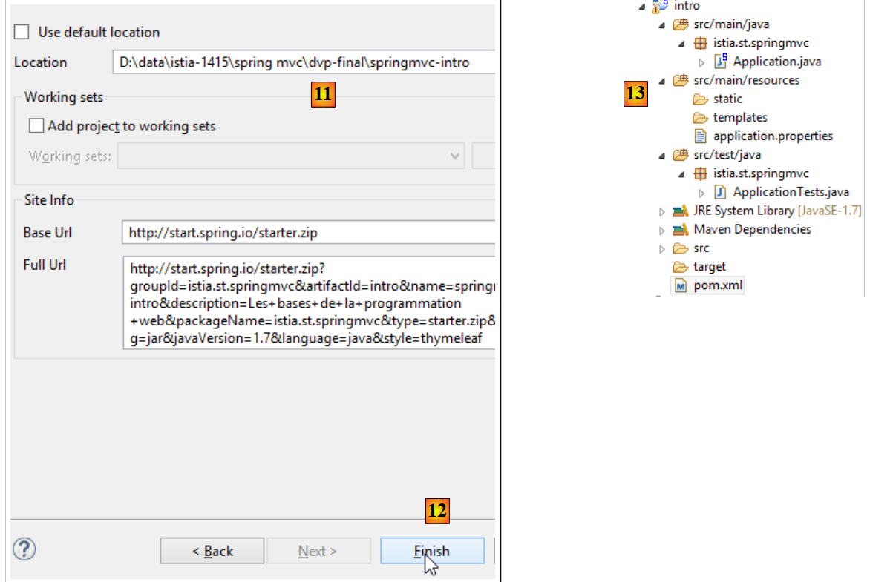
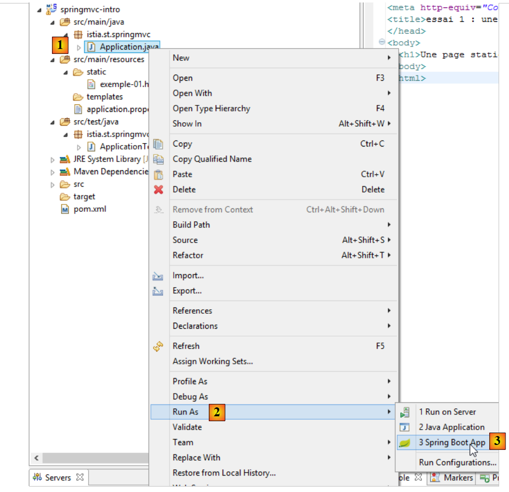
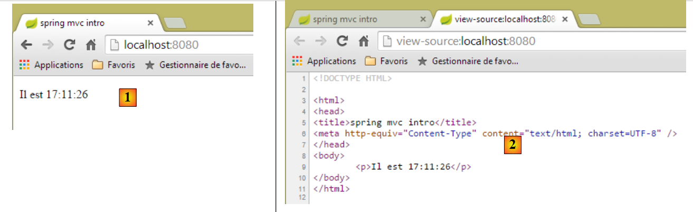
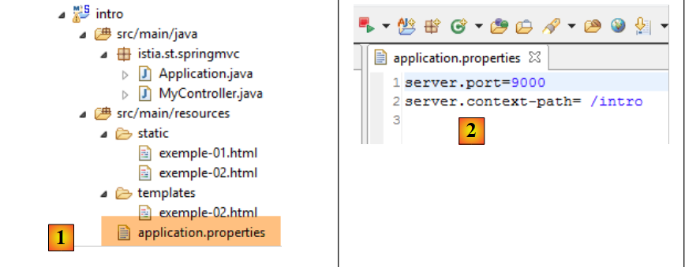
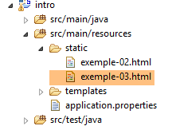
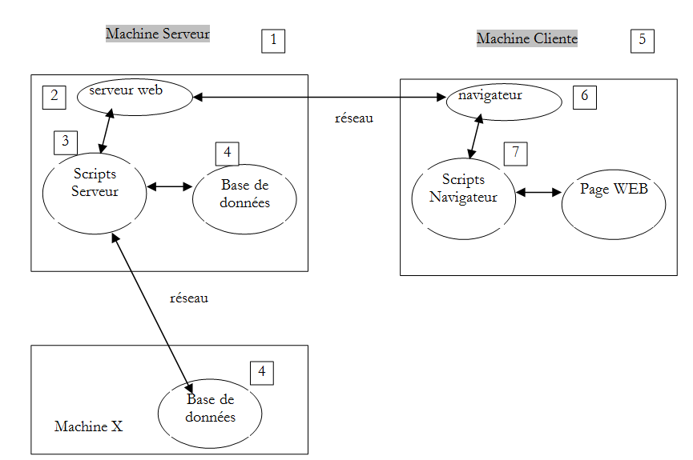
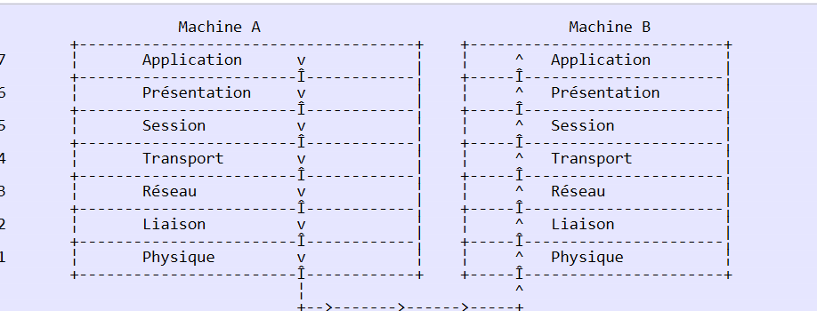
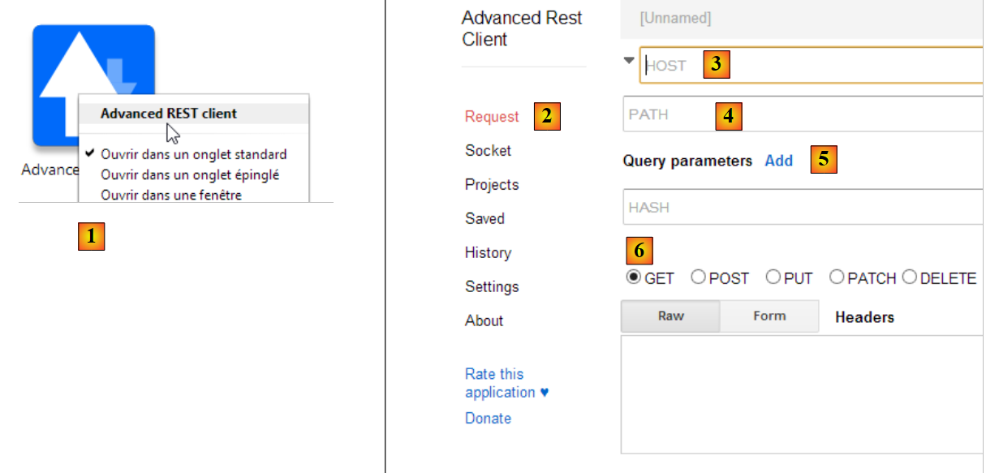
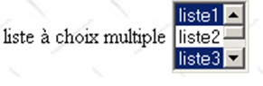

2. Les bases de la programmation Web
Ce chapitre a pour but essentiel de faire découvrir les grands principes de la programmation Web qui sont indépendants de la technologie particulière utilisée pour les mettre en oeuvre. Il présente de nombreux exemples qu'il est conseillé de tester afin de "s'imprégner" peu à peu de la philosophie du développement Web. Le lecteur ayant déjà ces connaissances peut passer directement au chapitre 3.
Les composantes d'une application Web sont les suivantes :

Numéro | Rôle | Exemples courants |
1 | OS Serveur | Unix, Linux, Windows |
2 | Serveur Web | Apache (Unix, Linux, Windows) IIS (Windows+plate-forme .NET) Node.js (Unix, Linux, Windows) |
3 | Codes exécutés côté serveur. Ils peuvent l'être par des modules du serveur ou par des programmes externes au serveur (CGI). | JAVASCRIPT (Node.js) PHP (Apache, IIS) JAVA (Tomcat, Websphere, JBoss, Weblogic, ...) C#, VB.NET (IIS) |
4 | Base de données - Celle-ci peut être sur la même machine que le programme qui l'exploite ou sur une autre via Internet. | Oracle (Linux, Windows) MySQL (Linux, Windows) Postgres (Linux, Windows) SQL Server (Windows) |
5 | OS Client | Unix, Linux, Windows |
6 | Navigateur Web | Chrome, Internet Explorer, Firefox, Opera, Safari, ... |
7 | Scripts exécutés côté client au sein du navigateur. Ces scripts n'ont aucun accès aux disques du poste client. | Javascript (tout navigateur) |
2.1. Les échanges de données dans une application Web avec formulaire

Numéro | Rôle |
1 | Le navigateur demande une URL pour la 1ère fois (http://machine/url). Auncun paramètre n'est passé. |
2 | Le serveur Web lui envoie la page Web de cette URL. Elle peut être statique ou bien dynamiquement générée par un script serveur (SA) qui a pu utiliser le contenu de bases de données (SB, SC). Ici, le script détectera que l'URL a été demandée sans passage de paramètres et génèrera la page Web initiale. Le navigateur reçoit la page et l'affiche (CA). Des scripts côté navigateur (CB) ont pu modifier la page initiale envoyée par le serveur. Ensuite par des interactions entre l'utilisateur (CD) et les scripts (CB) la page Web va être modifiée. Les formulaires vont notamment être remplis. |
3 | L'utilisateur valide les données du formulaire qui doivent alors être envoyées au serveur Web. Le navigateur redemande l'URL initiale ou une autre selon les cas et transmet en même temps au serveur les valeurs du formulaire. Il peut utiliser pour ce faire deux méthodes appelées GET et POST. A réception de la demande du client, le serveur déclenche le script (SA) associé à l'URL demandée, script qui va détecter les paramètres et les traiter. |
4 | Le serveur délivre la page Web construite par programme (SA, SB, SC). Cette étape est identique à l'étape 2 précédente. Les échanges se font désormais selon les étapes 2 et 3. |
2.2. Pages Web statiques, Pages Web dynamiques
Une page statique est représentée par un fichier HTML. Une page dynamique est une page HTML générée "à la volée" par le serveur Web.
2.2.1. Page statique HTML (HyperText Markup Language)
Construisons un premier projet Spring MVC [1-2] :
 |
- en [1-2], nous créons un nouveau projet basé sur Spring Boot [http://projects.spring.io/spring-boot/] ;
 |
- les informations [3-7] sont pour la configuration Maven du projet ;
- en [3], le nom du projet Maven ;
- en [4], le groupe Maven dans lequel sera placé le résultat de la compilation du projet ;
- en [5], le nom donné au produit de la compilation ;
- en [6], une description du projet ;
- en [7], le package dans lequel sera placée la classe exécutable du projet ;
- en [8], la nature du projet. C'est un projet web avec des vues Thymeleaf. On voit ici, toutes les dépendances Maven prêtes à l'emploi offertes par le projet Spring Boot ;
- en [9], on indique que le produit issu du build Maven sera packagé dans une archive jar et non war. Le projet va alors utiliser un serveur Tomcat embarqué qui se trouvera dans ses dépendances ;
- en [10], on passe à la suite de l'assistant ;
 |
- en [11], on indique le dossier du projet ;
- en [12], on termine l'assistant ;
- en [13], le projet généré.
Examinons le fichier [pom.xml] généré :
<?xml version="1.0" encoding="UTF-8"?>
<project xmlns="http://maven.apache.org/POM/4.0.0" xmlns:xsi="http://www.w3.org/2001/XMLSchema-instance"
xsi:schemaLocation="http://maven.apache.org/POM/4.0.0 http://maven.apache.org/xsd/maven-4.0.0.xsd">
<modelVersion>4.0.0</modelVersion>
<groupId>istia.st.springmvc</groupId>
<artifactId>intro</artifactId>
<version>0.0.1-SNAPSHOT</version>
<packaging>jar</packaging>
<name>springmvc-intro</name>
<description>Les bases de la programmation web</description>
<parent>
<groupId>org.springframework.boot</groupId>
<artifactId>spring-boot-starter-parent</artifactId>
<version>1.1.9.RELEASE</version>
<relativePath /> <!-- lookup parent from repository -->
</parent>
<dependencies>
<dependency>
<groupId>org.springframework.boot</groupId>
<artifactId>spring-boot-starter-web</artifactId>
</dependency>
<dependency>
<groupId>org.springframework.boot</groupId>
<artifactId>spring-boot-starter-test</artifactId>
<scope>test</scope>
</dependency>
</dependencies>
<properties>
<project.build.sourceEncoding>UTF-8</project.build.sourceEncoding>
<start-class>istia.st.springmvc.Application</start-class>
<java.version>1.7</java.version>
</properties>
<build>
<plugins>
<plugin>
<groupId>org.springframework.boot</groupId>
<artifactId>spring-boot-maven-plugin</artifactId>
</plugin>
</plugins>
</build>
</project>
Il reprend toutes informations données dans l'assistant. Lignes 26-30, nous trouvons une dépendance que nous ne connaissions pas. Elle permet l'intégration des tests unitaires JUnit avec Spring.
Commençons par créer une page HTML statique dans ce projet. Elle doit être placée par défaut dans le dossier [src / main / resources / static] :
 |
- en [1-4], on crée un fichier HTML dans le dossier [static] ;
 |
- en [6], donner un nom à la page ;
- en [7], la page a été ajoutée.
Le contenu de la page créée est le suivant :
<!DOCTYPE html>
<html>
<head>
<meta charset="ISO-8859-1">
<title>Insert title here</title>
</head>
<body>
</body>
</html>
- lignes 2-10 : le code est délimité par la balise racine <html> ;
- lignes 3-6 : la balise <head> délimite ce qu'on appelle l'entête de la page ;
- lignes 7-9 : la balise <body> délimite ce qu'on appelle le corps de la page.
Modifions ce code de la façon suivante :
<!DOCTYPE html>
<html xmlns="http://www.w3.org/1999/xhtml">
<head>
<meta http-equiv="Content-Type" content="text/html; charset=utf-8" />
<title>essai 1 : une page statique</title>
</head>
<body>
<h1>Une page statique...</h1>
</body>
</html>
- ligne 5 : définit le titre de la page – sera affiché comme titre de la fenêtre du navigateur affichant la page ;
- ligne 8 : un texte en gros caractères (<h1>).
Exécutons l'application [1-3] :
 |
puis avec un navigateur, demandons l'URL [http://localhost:8080/exemple-01.html] :
 |
- en [1], l'URL de la page visualisée ;
- en [2], le titre de la fenêtre – a été fourni par la balise <title> de la page ;
- en [3], le corps de la page - a été fourni par la balise <h1>.
Regardons [4-5] le code HTML reçu par le navigateur :
 |
- en [5], le navigateur a reçu la page HTML que nous avions construite. Il l'a interprétée et en a fait un affichage graphique.
2.2.2. Une page Thymeleaf dynamique
Créons maintenant une page Thymeleaf. C'est une page HTML classique avec des balises enrichies d'attributs [Thymeleaf] [http://www.thymeleaf.org/]. On suit une démarche analogue à celui de la création de la page HTML mais cette fois-ci c'est dans le dossier [templates] qu'il faut placer la nouvelle page HTML :
 |
La page [exemple-02.html] sera la suivante :
<!DOCTYPE HTML>
<html xmlns:th="http://www.thymeleaf.org">
<head>
<title>spring mvc intro</title>
<meta http-equiv="Content-Type" content="text/html; charset=UTF-8" />
</head>
<body>
<p th:text="'Il est ' + ${heure}">Voici l'heure</p>
</body>
</html>
- ligne 8 : la balise <p> est une balise HTML qui introduit un paragraphe dans la page affichée. [th:text] est un attribut [Thymeleaf] qui a deux destinées différentes selon que [Thymeleaf] est à l'oeuvre ou non :
- si [Thymeleaf] n'interprète pas la page HTML, l'attribut [th:text] sera ignoré car inconnu en HTML. Le texte affiché sera alors [Voici l'heure],
- si [Thymeleaf] interprète la page HTML, l'attribut [th:text] sera évalué et sa valeur remplacera le texte [Voici l'heure]. Sa valeur sera du genre [Il est 17:11:06] ;
Voyons cela à l'oeuvre. Nous dupliquons la page [templates / exemple-02.html] dans le dossier [static]. Les pages HTML placées dans ce dossier ne sont pas interprétées par [Thymeleaf] :
 |  |  |
Nous exécutons l'application comme nous l'avons déjà fait plusieurs fois, puis nous demandons avec un navigateur l'URL [http://localhost:8080/exemple-02.html] :
 |
Nous voyons en [1] que l'attribut [th:text] n'a pas été interprété et n'a pas provoqué non plus d'erreur. Le code source de la page reçue en [2] montre que le navigateur a bien reçu la page complète.
Revenons à la page [exemple-02.html] du dossier [templates] :
 |
Les pages HTML placées dans le dossier [templates] sont interpétées par [Thymeleaf]. Revenons au code de la page :
<!DOCTYPE HTML>
<html xmlns:th="http://www.thymeleaf.org">
<head>
<title>spring mvc intro</title>
<meta http-equiv="Content-Type" content="text/html; charset=UTF-8" />
</head>
<body>
<p th:text="'Il est ' + ${heure}">Voici l'heure</p>
</body>
</html>
- ligne 7 : [Thymeleaf] va interpréter l'attribut [th:text] et va remplacer [Voici l'heure] par la valeur de l'expression :
Cette expression utilise la variable [${heure}] où [heure] appartient au modèle de la vue [exemple-02.html]. Il nous faut donc créer ce modèle. Pour cela, nous allons suivre l'exemple étudié au paragraphe 1.6. Nous faisons évoluer le projet de la façon suivante :
 |
En [1], nous ajoutons le contrôleur suivant :
package istia.st.springmvc;
import java.text.SimpleDateFormat;
import java.util.Date;
import org.springframework.stereotype.Controller;
import org.springframework.ui.Model;
import org.springframework.web.bind.annotation.RequestMapping;
@Controller
public class MyController {
@RequestMapping("/")
public String heure(Model model) {
// format de l'heure
SimpleDateFormat formater = new SimpleDateFormat("HH:MM:ss");
// l'heure du moment
String heure = formater.format(new Date());
// on met l'heure dans le modèle de la vue
model.addAttribute("heure", heure);
// on fait afficher la vue [exemple-02.html]
return "exemple-02";
}
}
- lignes 13-14 : la méthode [heure] traite l'URL [/] ;
- ligne 14 : [Model model] est un modèle vide. L'action [heure] doit y mettre les attributs qu'elle souhaite voir dans le modèle. On sait que la vue [exemple-02.html] attend un attribut nommé [heure] ;
- lignes 19-22 : réalisent ce qu'on vient d'expliquer. La vue [exemple-02.html] va être affichée (ligne 22) avec dans son modèle un attribut nommé [heure] (ligne 20) ;
- ligne 16 : on crée un formateur de date. Le format [HH:MM:ss] utilisé est un format [heures:minutes:secondes] où les heures sont dans l'intervalle [0-24] ;
- ligne 18 : avec ce formateur, on formate la date du jour ;
- ligne 20 : l'heure obtenue est associée à un attribut nommé [heure] ;
Nous lançons l'application et nous demandons l'URL [/] :
 |
- en [1] la page obtenue et en [2] son contenu HTML. On peut constater que le texte initial [Voici l'heure] a complètement disparu ;
Si maintenant on rafraîchit la page [1] (F5), nous obtenons un autre affichage (nouvelle heure) alors que l'URL ne change pas. C'est l'aspect dynamique de la page : son contenu peut changer au fil du temps.
On retiendra de ce qui précède la nature fondamentalement différente des pages dynamiques et statiques.
2.2.3. Configuration de l'application Spring Boot
Revenons à l'architecture du projet Eclipse :
 |
Le fichier [application.properties] permet de configurer l'application Spring Boot. Pour l'instant ce fichier est vide. On peut l'utiliser pour configurer l'application de multiples façons décrites à l'URL [http://docs.spring.io/spring-boot/docs/current/reference/html/common-application-properties.html]. Nous allons utiliser le fichier [application.properties] suivant [2] :
- ligne 1 : fixe le port de service de l'application web ;
- ligne 2 : fixe le contexte de l'application web ;
Avec cette configuration, la page statique [exemple-01.html] sera obtenue avec l'URL [http://localhost:9000/intro/exemple-01.html] :
 |
2.3. Scripts côté navigateur
Une page HTML peut contenir des scripts qui seront exécutés par le navigateur. Le principal langage de script côté navigateur est actuellement (janv 2015) Javascript. Des centaines de bibliothèques ont été construites avec ce langage pour faciliter la vie du développeur.
Construisons une nouvelle page [exemple-03.html] dans le dossier [static] du projet existant :
 |
Editons le fichier [exemple-03.html] avec le contenu suivant :
<!DOCTYPE html>
<html xmlns="http://www.w3.org/1999/xhtml">
<head>
<meta http-equiv="Content-Type" content="text/html; charset=utf-8" />
<title>exemple Javascript</title>
<script type="text/javascript">
function réagir() {
alert("Vous avez cliqué sur le bouton !");
}
</script>
</head>
<body>
<input type="button" value="Cliquez-moi" onclick="réagir()" />
</body>
</html>
- ligne 13 : définit un bouton (attribut type) avec le texte " Cliquez-moi " (attribut value). Lorsqu'on clique dessus, la fonction Javascript [réagir] est exécutée (attribut onclick) ;
- lignes 6-10 : un script Javascript ;
- lignes 7-9 : la fonction [réagir] ;
- ligne 8 : affiche une boîte de dialogue avec le message [Vous avez cliqué sur le bouton].
Visualisons la page dans un navigateur :
 |
- en [1], la page affichée ;
- en [2], la boîte de dialogue lorsqu'on clique sur le bouton.
Lorsqu'on clique sur le bouton, il n'y a pas d'échanges avec le serveur. Le code Javascript est exécuté par le navigateur.
Avec les très nombreuses bibliothèques Javascript disponibles, on peut désormais embarquer de véritables applications sur le navigateur. On tend alors vers les architectures suivantes :
 |
- 1-2 : le serveur HTML est un serveur de pages statiques HTML5 / CSS / Javascript ;
- 3-4 : les pages HTML5 / CSS / Javascript délivrées interagissent directement avec le serveur de données. Celui-ci délivre uniquement des données sans habillage HTML. C'est le Javascript qui les insère dans des pages HTML déjà présentes sur le navigateur.
Dans cette architecture, le code Javascript peut devenir lourd. On cherche alors à le structurer en couches comme on le fait pour le code côté serveur :
 |
- le couche [UI] est celle qui interagit avec l'utilisateur ;
- la couche [DAO] interagit avec le serveur de données ;
- la couche [métier] rassemble les procédures métier qui n'interagissent ni avec l'utilisateur, ni avec le serveur de données. Cette couche peut ne pas exister.
2.4. Les échanges client-serveur
Revenons à notre schéma de départ qui illustrait les acteurs d'une application Web :

Nous nous intéressons ici aux échanges entre la machine cliente et la machine serveur. Ceux-ci se font au travers d'un réseau et il est bon de rappeler la structure générale des échanges entre deux machines distantes.
2.4.1. Le modèle OSI
Le modèle de réseau ouvert appelé OSI (Open Systems Interconnection Reference Model) défini par l'ISO (International Standards Organisation) décrit un réseau idéal où la communication entre machines peut être représentée par un modèle à sept couches :
 |
Chaque couche reçoit des services de la couche inférieure et offre les siens à la couche supérieure. Supposons que deux applications situées sur des machines A et B différentes veulent communiquer : elles le font au niveau de la couche Application. Elles n'ont pas besoin de connaître tous les détails du fonctionnement du réseau : chaque application remet l'information qu'elle souhaite transmettre à la couche du dessous : la couche Présentation. L'application n'a donc à connaître que les règles d'interfaçage avec la couche Présentation. Une fois l'information dans la couche Présentation, elle est passée selon d'autres règles à la couche Session et ainsi de suite, jusqu'à ce que l'information arrive sur le support physique et soit transmise physiquement à la machine destination. Là, elle subira le traitement inverse de celui qu'elle a subi sur la machine expéditeur.
A chaque couche, le processus expéditeur chargé d'envoyer l'information, l'envoie à un processus récepteur sur l'autre machine apartenant à la même couche que lui. Il le fait selon certaines règles que l'on appelle le protocole de la couche. On a donc le schéma de communication final suivant :
 |
Le rôle des différentes couches est le suivant :
Physique | Assure la transmission de bits sur un support physique. On trouve dans cette couche des équipements terminaux de traitement des données (E.T.T.D.) tels que terminal ou ordinateur, ainsi que des équipements de terminaison de circuits de données (E.T.C.D.) tels que modulateur/démodulateur, multiplexeur, concentrateur. Les points d'intérêt à ce niveau sont :
|
Liaison de données | Masque les particularités physiques de la couche Physique. Détecte et corrige les erreurs de transmission. |
Réseau | Gère le chemin que doivent suivre les informations envoyées sur le réseau. On appelle cela le routage : déterminer la route à suivre par une information pour qu'elle arrive à son destinataire. |
Transport | Permet la communication entre deux applications alors que les couches précédentes ne permettaient que la communication entre machines. Un service fourni par cette couche peut être le multiplexage : la couche transport pourra utiliser une même connexion réseau (de machine à machine) pour transmettre des informations appartenant à plusieurs applications. |
Session | On va trouver dans cette couche des services permettant à une application d'ouvrir et de maintenir une session de travail sur une machine distante. |
Présentation | Elle vise à uniformiser la représentation des données sur les différentes machines. Ainsi des données provenant d'une machine A, vont être "habillées" par la couche Présentation de la machine A, selon un format standard avant d'être envoyées sur le réseau. Parvenues à la couche Présentation de la machine destinatrice B qui les reconnaîtra grâce à leur format standard, elles seront habillées d'une autre façon afin que l'application de la machine B les reconnaisse. |
Application | A ce niveau, on trouve les applications généralement proches de l'utilisateur telles que la messagerie électronique ou le transfert de fichiers. |
2.4.2. Le modèle TCP/IP
Le modèle OSI est un modèle idéal. La suite de protocoles TCP/IP s'en approche sous la forme suivante :
 |
- l'interface réseau (la carte réseau de l'ordinateur) assure les fonctions des couches 1 et 2 du modèle OSI
- la couche IP (Internet Protocol) assure les fonctions de la couche 3 (réseau)
- la couche TCP (Transfer Control Protocol) ou UDP (User Datagram Protocol) assure les fonctions de la couche 4 (transport). Le protocole TCP s'assure que les paquets de données échangés par les machines arrivent bien à destination. Si ce n'est pas les cas, il renvoie les paquets qui se sont égarés. Le protocole UDP ne fait pas ce travail et c'est alors au développeur d'applications de le faire. C'est pourquoi sur l'internet qui n'est pas un réseau fiable à 100%, c'est le protocole TCP qui est le plus utilisé. On parle alors de réseau TCP-IP.
- la couche Application recouvre les fonctions des niveaux 5 à 7 du modèle OSI.
Les applications Web se trouvent dans la couche Application et s'appuient donc sur les protocoles TCP-IP. Les couches Application des machines clientes et serveur s'échangent des messages qui sont confiées aux couches 1 à 4 du modèle pour être acheminées à destination. Pour se comprendre, les couches application des deux machines doivent "parler" un même langage ou protocole. Celui des applications Web s'appelle HTTP (HyperText Transfer Protocol). C'est un protocole de type texte, c.a.d. que les machines échangent des lignes de texte sur le réseau pour se comprendre. Ces échanges sont normalisés, ç-à-d. que le client dispose d'un certain nombre de messages pour indiquer exactement ce qu'il veut au serveur et ce dernier dispose également d'un certain nombre de messages pour donner au client sa réponse. Cet échange de messages a la forme suivante :

Client --> Serveur
Lorsque le client fait sa demande au serveur Web, il envoie
- des lignes de texte au format HTTP pour indiquer ce qu'il veut ;
- une ligne vide ;
- optionnellement un document.
Serveur --> Client
Lorsque le serveur fait sa réponse au client, il envoie
- des lignes de texte au format HTTP pour indiquer ce qu'il envoie ;
- une ligne vide ;
- optionnellement un document.
Les échanges ont donc la même forme dans les deux sens. Dans les deux cas, il peut y avoir envoi d'un document même s'il est rare qu'un client envoie un document au serveur. Mais le protocole HTTP le prévoit. C'est ce qui permet par exemple aux abonnés d'un fournisseur d'accès de télécharger des documents divers sur leur site personnel hébergé chez ce fournisseur d'accès. Les documents échangés peuvent être quelconques. Prenons un navigateur demandant une page Web contenant des images :
- le navigateur se connecte au serveur Web et demande la page qu'il souhaite. Les ressources demandées sont désignées de façon unique par des URL (Uniform Resource Locator). Le navigateur n'envoie que des entêtes HTTP et aucun document.
- le serveur lui répond. Il envoie tout d'abord des entêtes HTTP indiquant quel type de réponse il envoie. Ce peut être une erreur si la page demandée n'existe pas. Si la page existe, le serveur dira dans les entêtes HTTP de sa réponse qu'après ceux-ci il va envoyer un document HTML (HyperText Markup Language). Ce document est une suite de lignes de texte au format HTML. Un texte HTML contient des balises (marqueurs) donnant au navigateur des indications sur la façon d'afficher le texte.
- le client sait d'après les entêtes HTTP du serveur qu'il va recevoir un document HTML. Il va analyser celui-ci et s'apercevoir peut-être qu'il contient des références d'images. Ces dernières ne sont pas dans le document HTML. Il fait donc une nouvelle demande au même serveur Web pour demander la première image dont il a besoin. Cette demande est identique à celle faite en 1, si ce n'est que la resource demandée est différente. Le serveur va traiter cette demande en envoyant à son client l'image demandée. Cette fois-ci, dans sa réponse, les entêtes HTTP préciseront que le document envoyé est une image et non un document HTML.
- le client récupère l'image envoyée. Les étapes 3 et 4 vont être répétées jusqu'à ce que le client (un navigateur en général) ait tous les documents lui permettant d'afficher l'intégralité de la page.
2.4.3. Le protocole HTTP
Découvrons le protocole HTTP sur des exemples. Que s'échangent un navigateur et un serveur Web ?
Le service Web ou service HTTP est un service TCP-IP qui travaille habituellement sur le port 80. Il pourrait travailler sur un autre port. Dans ce cas, le navigateur client serait obligé de préciser ce port dans l'URL qu'il demande. Une URL a la forme générale suivante :
protocole://machine[:port]/chemin/infos
avec
protocole | http pour le service Web. Un navigateur peut également servir de client à des services ftp, news, telnet, .. |
machine | nom de la machine où officie le service Web |
port | port du service Web. Si c'est 80, on peut omettre le n° du port. C'est le cas le plus fréquent |
chemin | chemin désignant la ressource demandée |
infos | informations complémentaires données au serveur pour préciser la demande du client |
Que fait un navigateur lorsqu'un utilisateur demande le chargement d'une URL ?
- il ouvre une communication TCP-IP avec la machine et le port indiqués dans la partie machine[:port] de l'URL. Ouvrir une communication TCP-IP, c'est créer un "tuyau" de communication entre deux machines. Une fois ce tuyau créé, toutes les informations échangées entre les deux machines vont passer dedans. La création de ce tuyau TCP-IP n'implique pas encore le protocole HTTP du Web.
- le tuyau TCP-IP créé, le client va faire sa demande au serveur Web et il va la faire en lui envoyant des lignes de texte (des commandes) au format HTTP. Il va envoyer au serveur la partie chemin/infos de l'URL
- le serveur lui répondra de la même façon et dans le même tuyau
- l'un des deux partenaires prendra la décision de fermer le tuyau. Cela dépend du protocole HTTP utilisé. Avec le protocole HTTP 1.0, le serveur ferme la connexion après chacune de ses réponses. Cela oblige un client qui doit faire plusieurs demandes pour obtenir les différents documents constituant une page Web à ouvrir une nouvelle connexion à chaque demande, ce qui a un coût. Avec le protocole HTTP/1.1, le client peut dire au serveur de garder la connexion ouverte jusqu'à ce qu'il lui dise de la fermer. Il peut donc récupérer tous les documents d'une page Web avec une seule connexion et fermer lui-même la connexion une fois le dernier document obtenu. Le serveur détectera cette fermeture et fermera lui aussi la connexion.
Pour découvrir les échanges entre un client et un serveur Web, nous allons utiliser l'extension [Advanced Rest Client] du navigateur Chrome que nous avons installée au paragraphe 9.6. Nous serons dans la situation suivante :

Le serveur Web pourra être quelconque. Nous cherchons ici à découvrir les échanges qui vont se produire entre navigateur et le serveur Web. Précédemment, nous avons créé la page HTML statique suivante :
<!DOCTYPE html>
<html xmlns="http://www.w3.org/1999/xhtml">
<head>
<meta http-equiv="Content-Type" content="text/html; charset=utf-8" />
<title>essai 1 : une page statique</title>
</head>
<body>
<h1>Une page statique...</h1>
</body>
</html>
que nous visualisons dans un navigateur :
 |
On voit que l'URL demandée est : [http://localhost:9000/intro/exemple-01.html]. La machine du service Web est donc localhost (=machine locale) et le port 9000. Utilisons l'application [Advanced Rest Client] pour demander la même URL :
 |
- en [1], on lance l'application (dans l'onglet [Applications] d'un nouvel onglet Chrome) ;
- en [2], on sélectionne l'option [Request] ;
- en [3], on précise le serveur interrogé : http://localhost:9000;
- en [4], on précise l'URL demandée : /intro/exemple-01.html ;
- en [5], on ajoute d'éventuels paramètres à l'URL. Aucun ici ;
- en [6], on précise la commande HTTP utilisée pour la requête, ici GET.
Cela donne la requête suivante :
 |
La requête ainsi préparée [7] est envoyée au serveur par [8]. La réponse obtenue est alors la suivante :
 |
Nous avons dit plus haut que les échanges client-serveur avaient la forme suivante :
- en [1], on voit les entêtes HTTP envoyés par le navigateur dans sa requête. Il n'avait pas de document à envoyer ;
- en [2], on voit les entêtes HTTP envoyés par le serveur en réponse. En [3], on voit le document qu'il a envoyé.
En [3], on reconnaît la page HTML statique que nous avons placée sur le serveur web.
Examinons la requête HTTP du navigateur :
- la ligne 1 n'a pas été affichée par l'application ;
- ligne 6 : le navigateur s'identifie avec l'entête [User-Agent] ;
- ligne 7 : le navigateur indique qu'il envoie au serveur un document texte (text/plain) au format UTF-8. En fait ici, le navigateur n'a envoyé aucun document ;
- ligne 8 : le navigateur indique qu'il accepte tout type de document en réponse ;
- ligne 9 : le navigateur précise les formats de document acceptés ;
- ligne 10 : le navigateur précise les langues qu'il souhaite par ordre de préférence.
Le serveur lui a répondu en envoyant les entêtes HTTP suivants :
- ligne 1 : n'a pas été affichée par l'application ;
- ligne 2 : le serveur s'identifie, ici un serveur Apache-Coyote ;
- ligne 3 : la date de dernière modification du document envoyé ;
- ligne 4 : la nature du document envoyé par le serveur. Ici un document HTML ;
- ligne 5 : la taille en octets du document HTML envoyé.
- ligne 6 : date et heure de la réponse ;
2.4.4. Conclusion
Nous avons découvert la structure de la demande d'un client Web et celle de la réponse qui lui est faite par le serveur Web sur quelques exemples. Le dialogue se fait à l'aide du protocole HTTP, un ensemble de commandes au format texte échangées par les deux partenaires. La requête du client et la réponse du serveur ont la même structure suivante :
Les deux commandes usuelles pour demander une ressource sont GET et POST. La commande GET n'est pas accompagnée d'un document. La commande POST elle, est accompagnée d'un document qui est le plus souvent une chaîne de caractères rassemblant l'ensemble des valeurs saisies dans un formulaire. La commande HEAD permet de demander seulement les entêtes HTTP et n'est pas accompagnée de document.
A la demande d'un client, le serveur envoie une réponse qui a la même structure. La ressource demandée est transmise dans la partie [Document] sauf si la commande du client était HEAD, auquel cas seuls les entêtes HTTP sont envoyés.
2.5. Les bases du langage HTML
Un navigateur Web peut afficher divers documents, le plus courant étant le document HTML (HyperText Markup Language). Celui-ci est un texte formaté avec des balises de la forme <balise>texte</balise>. Ainsi le texte <B>important</B> affichera le texte important en gras. Il existe des balises seules telles que la balise <hr/> qui affiche une ligne horizontale. Nous ne passerons pas en revue les balises que l'on peut trouver dans un texte HTML. Il existe de nombreux logiciels WYSIWYG permettant de construire une page Web sans écrire une ligne de code HTML. Ces outils génèrent automatiquement le code HTML d'une mise en page faite à l'aide de la souris et de contrôles prédéfinis. On peut ainsi insérer (avec la souris) dans la page un tableau puis consulter le code HTML généré par le logiciel pour découvrir les balises à utiliser pour définir un tableau dans une page Web. Ce n'est pas plus compliqué que cela. Par ailleurs, la connaissance du langage HTML est indispensable puisque les applications Web dynamiques doivent générer elles-mêmes le code HTML à envoyer aux clients Web. Ce code est généré par programme et il faut bien sûr savoir ce qu'il faut générer pour que le client ait la page Web qu'il désire.
Pour résumer, il n'est nul besoin de connaître la totalité du langage HTML pour démarrer la programmation Web. Cependant cette connaissance est nécessaire et peut être acquise au travers de l'utilisation de logiciels WYSIWYG de construction de pages Web tels que DreamWeaver et des dizaines d'autres. Une autre façon de découvrir les subtilités du langage HTML est de parcourir le Web et d'afficher le code source des pages qui présentent des caractéristiques intéressantes et encore inconnues pour vous.
2.5.1. Un exemple
Considérons l'exemple suivant qui présente quelques éléments qu'on peut trouver dans un document Web tels que :
- un tableau ;
- une image ;
- un lien.
 |  |
Un document HTML a la forme générale suivante :
<html> <head> <title>Un titre</title> ... </head> <body attributs> ... </body></html>
L'ensemble du document est encadré par les balises <html>...</html>. Il est formé de deux parties :
- <head>...</head> : c'est la partie non affichable du document. Elle donne des renseignements au navigateur qui va afficher le document. On y trouve souvent la balise <title>...</title> qui fixe le texte qui sera affiché dans la barre de titre du navigateur. On peut y trouver d'autres balises notamment des balises définissant les mots clés du document, mot clés utilisés ensuite par les moteurs de recherche. On peut trouver également dans cette partie des scripts, écrits le plus souvent en javascript ou vbscript et qui seront exécutés par le navigateur.
- <body attributs>...</body> : c'est la partie qui sera affichée par le navigateur. Les balises HTML contenues dans cette partie indiquent au navigateur la forme visuelle "souhaitée" pour le document. Chaque navigateur va interpréter ces balises à sa façon. Deux navigateurs peuvent alors visualiser différemment un même document Web. C'est généralement l'un des casse-têtes des concepteurs Web.
Le code HTML de notre document exemple est le suivant :
<!DOCTYPE html>
<html xmlns="http://www.w3.org/1999/xhtml">
<head>
<meta http-equiv="Content-Type" content="text/html; charset=utf-8" />
<title>balises</title>
</head>
<body style="height: 400px; width: 400px; background-image: url(images/standard.jpg)">
<h1 style="text-align: center">Les balises HTML</h1>
<hr />
<table border="1">
<thead>
<tr>
<th>Colonne 1</th>
<th>Colonne 2</th>
<th>Colonne 3</th>
</tr>
</thead>
<tbody>
<tr>
<td>cellule(1,1)</td>
<td style="width: 150px; text-align: center;">cellule(1,2)</td>
<td>cellule(1,3)</td>
</tr>
<tr>
<td>cellule(2,1)</td>
<td>cellule(2,2)</td>
<td>cellule(2,3</td>
</tr>
</tbody>
</table>
<table>
<tr>
<td>Une image</td>
<td><img border="0" src="images/cerisier.jpg" /></td>
</tr>
<tr>
<td>le site de l'ISTIA</td>
<td><a href="http://istia.univ-angers.fr">ici</a></td>
</tr>
</table>
</body>
</html>
Elément | balises et exemples HTML |
titre du document | <title>balises</title> (ligne 5) le texte balises apparaîtra dans la barre de titre du navigateur qui affichera le document |
barre horizontale | <hr/> : affiche un trait horizontal (ligne 10) |
tableau | <table attributs>....</table> : pour définir le tableau (lignes 11, 31) <thead>...</thead> : pour définir les entêtes des colonnes (lignes 12, 18) <tbody>...</tbody> : pour définir le contenu du tableau (ligne 19, 30) <tr attributs>...</tr> : pour définir une ligne (lignes 20, 24) <td attributs>...</td> : pour définir une cellule (ligne 21) exemples : <table border="1">...</table> : l'attribut border définit l'épaisseur de la bordure du tableau <td style="width: 150px; text-align: center;">cellule(1,2)</td> : définit une cellule dont le contenu sera cellule(1,2). Ce contenu sera centré horizontalement (text-align :center). La cellule aura une largeur de 150 pixels (width :150px) |
image | <img border="0" src="/images/cerisier.jpg"/> (ligne 36) : définit une image sans bordure (border=0") dont le fichier source est /images/cerisier.jpg sur le serveur Web (src="images/cerisier.jpg"). Ce lien se trouve sur un document Web obtenu avec l'URL http://localhost:port/intro/exemple-04.html. Aussi, le navigateur demandera-t-il l'URL http://localhost:port/intro/images/cerisier.jpg pour avoir l'image référencée ici. |
lien | <a href="http://istia.univ-angers.fr">ici</a> (ligne 40) : fait que le texte ici sert de lien vers l'URL http://istia.univ-angers.fr. |
fond de page | <body style="height:400px;width:400px;background-image:url(images/standard.jpg)"> (ligne 8) : indique que l'image qui doit servir de fond de page se trouve à l'URL [images/standard.jpg] du serveur Web. Dans le contexte de notre exemple, le navigateur demandera l'URL http://localhost:port/intro/images/standard.jpg pour obtenir cette image de fond. Par ailleurs, le corps du document sera affiché dans un rectangle de hauteur 400 pixels et de largeur 400 pixels. |
On voit dans ce simple exemple que pour construire l'intéralité du document, le navigateur doit faire trois requêtes au serveur :
- http://localhost:port/intro/exemple-04.html pour avoir le source HTML du document
- http://localhost:port/intro/images/cerisier.jpg pour avoir l'image cerisier.jpg
- http://localhost:port/intro/images/standard.jpg pour obtenir l'image de fond standard.jpg
2.5.2. Un formulaire HTML
L'exemple suivant présente un formulaire :
 |  |
Le code HTML produisant cet affichage est le suivant :
<!DOCTYPE html>
<html xmlns="http://www.w3.org/1999/xhtml">
<head>
<meta http-equiv="Content-Type" content="text/html; charset=utf-8" />
<title>formulaire</title>
<script type="text/javascript">
function effacer() {
alert("Vous avez cliqué sur le bouton Effacer");
}
</script>
</head>
<body style="height: 400px; width: 400px; background-image: url(images/standard.jpg)">
<h1 style="text-align: center">Formulaire HTML</h1>
<form method="post" action="postFormulaire">
<table>
<tr>
<td>Etes-vous marié(e)</td>
<td>
<input type="radio" value="Oui" name="R1" />Oui
<input type="radio" name="R1" value="non" checked="checked" />Non
</td>
</tr>
<tr>
<td>Cases à cocher</td>
<td>
<input type="checkbox" name="C1" value="un" />1
<input type="checkbox" name="C2" value="deux" checked="checked" />2
<input type="checkbox" name="C3" value="trois" />3
</td>
</tr>
<tr>
<td>Champ de saisie</td>
<td>
<input type="text" name="txtSaisie" size="20" value="qqs mots" />
</td>
</tr>
<tr>
<td>Mot de passe</td>
<td>
<input type="password" name="txtMdp" size="20" value="unMotDePasse" />
</td>
</tr>
<tr>
<td>Boîte de saisie</td>
<td>
<textarea rows="2" name="areaSaisie" cols="20">
ligne1
ligne2
ligne3
</textarea>
</td>
</tr>
<tr>
<td>combo</td>
<td>
<select size="1" name="cmbValeurs">
<option value="1">choix1</option>
<option selected="selected" value="2">choix2</option>
<option value="3">choix3</option>
</select>
</td>
</tr>
<tr>
<td>liste à choix simple</td>
<td>
<select size="3" name="lst1">
<option selected="selected" value="1">liste1</option>
<option value="2">liste2</option>
<option value="3">liste3</option>
<option value="4">liste4</option>
<option value="5">liste5</option>
</select>
</td>
</tr>
<tr>
<td>liste à choix multiple</td>
<td>
<select size="3" name="lst2" multiple="multiple">
<option value="1" selected="selected">liste1</option>
<option value="2">liste2</option>
<option selected="selected" value="3">liste3</option>
<option value="4">liste4</option>
<option value="5">liste5</option>
</select>
</td>
</tr>
<tr>
<td>bouton</td>
<td>
<input type="button" value="Effacer" name="cmdEffacer" onclick="effacer()" />
</td>
</tr>
<tr>
<td>envoyer</td>
<td>
<input type="submit" value="Envoyer" name="cmdRenvoyer" />
</td>
</tr>
<tr>
<td>rétablir</td>
<td>
<input type="reset" value="Rétablir" name="cmdRétablir" />
</td>
</tr>
</table>
<input type="hidden" name="secret" value="uneValeur" />
</form>
</body>
</html>
L'association contrôle visuel <--> balise HTML est le suivant :
Contrôle | balise HTML |
formulaire | <form method="post" action="..."> |
champ de saisie | <input type="text" name="txtSaisie" size="20" value="qqs mots" /> |
champ de saisie cachée | <input type="password" name="txtMdp" size="20" value="unMotDePasse" /> |
champ de saisie multilignes | <textarea rows="2" name="areaSaisie" cols="20"> ligne1 ligne2 ligne3 </textarea> |
boutons radio | <input type="radio" value="Oui" name="R1" />Oui <input type="radio" name="R1" value="non" checked="checked" />Non |
cases à cocher | <input type="checkbox" name="C1" value="un" />1 <input type="checkbox" name="C2" value="deux" checked="checked" />2 <input type="checkbox" name="C3" value="trois" />3 |
Combo | <select size="1" name="cmbValeurs"> <option value="1">choix1</option> <option selected="selected" value="2">choix2</option> <option value="3">choix3</option> </select> |
liste à sélection unique | <select size="3" name="lst1"> <option selected="selected" value="1">liste1</option> <option value="2">liste2</option> <option value="3">liste3</option> <option value="4">liste4</option> <option value="5">liste5</option> </select> |
liste à sélection multiple | <select size="3" name="lst2" multiple="multiple"> <option value="1">liste1</option> <option value="2">liste2</option> <option selected="selected" value="3">liste3</option> <option value="4">liste4</option> <option value="5">liste5</option> </select> |
bouton de type submit | <input type="submit" value="Envoyer" name="cmdRenvoyer" /> |
bouton de type reset | <input type="reset" value="Rétablir" name="cmdRétablir" /> |
bouton de type button | <input type="button" value="Effacer" name="cmdEffacer" onclick="effacer()" /> |
Passons en revue ces différentes balises :
2.5.2.1. Le formulaire
formulaire | |
balise HTML | <form name="..." method="..." action="...">...</form> |
attributs | name="frmexemple" : nom du formulaire method="..." : méthode utilisée par le navigateur pour envoyer au serveur Web les valeurs récoltées dans le formulaire action="..." : URL à laquelle seront envoyées les valeurs récoltées dans le formulaire. Un formulaire Web est entouré des balises <form>...</form>. Le formulaire peut avoir un nom (name="xx"). C'est le cas pour tous les contrôles qu'on peut trouver dans un formulaire. Le but d'un formulaire est de rassembler des informations données par l'utilisateur au clavier/souris et d'envoyer celles-ci à une URL de serveur Web. Laquelle ? Celle référencée dans l'attribut action="URL". Si cet attribut est absent, les informations seront envoyées à l'URL du document dans lequel se trouve le formulaire. Un client Web peut utiliser deux méthodes différentes appelées POST et GET pour envoyer des données à un serveur web. L'attribut method="méthode", avec method égal à GET ou POST, de la balise <form> indique au navigateur la méthode à utiliser pour envoyer les informations recueillies dans le formulaire à l'URL précisée par l'attribut action="URL". Lorsque l'attribut method n'est pas précisé, c'est la méthode GET qui est prise par défaut. |
2.5.2.2. Les champs de saisie texte
champ de saisie | <input type="text" name="txtSaisie" size="20" value="qqs mots" /> <input type="password" name="txtMdp" size="20" value="unMotDePasse" /> |
 |
balise HTML | <input type="..." name="..." size=".." value=".."/> La balise input existe pour divers contrôles. C'est l'attribut type qui permet de différencier ces différents contrôles entre eux. |
attributs | type="text" : précise que c'est un champ de saisie type="password" : les caractères présents dans le champ de saisie sont remplacés par des caractères *. C'est la seule différence avec le champ de saisie normal. Ce type de contrôle convient pour la saisie des mots de passe. size="20" : nombre de caractères visibles dans le champ - n'empêche pas la saisie de davantage de caractères name="txtSaisie" : nom du contrôle value="qqs mots" : texte qui sera affiché dans le champ de saisie. |
2.5.2.3. Les champs de saisie multilignes
champ de saisie multilignes | <textarea rows="2" name="areaSaisie" cols="20"> ligne1 ligne2 ligne3 </textarea> |
 |
balise HTML | <textarea ...>texte</textarea> affiche une zone de saisie multilignes avec au départ texte dedans |
attributs | rows="2" : nombre de lignes cols="'20" : nombre de colonnes name="areaSaisie" : nom du contrôle |
2.5.2.4. Les boutons radio
boutons radio | <input type="radio" value="Oui" name="R1" />Oui <input type="radio" name="R1" value="non" checked="checked" />Non |
 |
balise HTML | <input type="radio" attribut2="valeur2" ..../>texte affiche un bouton radio avec texte à côté. |
attributs | name="radio" : nom du contrôle. Les boutons radio portant le même nom forment un groupe de boutons exclusifs les uns des autres : on ne peut cocher que l'un d'eux. value="valeur" : valeur affectée au bouton radio. Il ne faut pas confondre cette valeur avec le texte affiché à côté du bouton radio. Celui-ci n'est destiné qu'à l'affichage. checked= "checked" : si ce mot clé est présent, le bouton radio est coché, sinon il ne l'est pas. |
2.5.2.5. Les cases à cocher
cases à cocher | <input type="checkbox" name="C1" value="un" />1 <input type="checkbox" name="C2" value="deux" checked="checked" />2 <input type="checkbox" name="C3" value="trois" />3 |
 |
balise HTML | <input type="checkbox" attribut2="valeur2" ....>texte affiche une case à cocher avec texte à côté. |
attributs | name="C1" : nom du contrôle. Les cases à cocher peuvent porter ou non le même nom. Les cases portant le même nom forment un groupe de cases associées. value="valeur" : valeur affectée à la case à cocher. Il ne faut pas confondre cette valeur avec le texte affiché à côté du bouton radio. Celui-ci n'est destiné qu'à l'affichage. checked= "checked" : si ce mot clé est présent, le case à cocher est cochée, sinon elle ne l'est pas. |
2.5.2.6. La liste déroulante (combo)
Combo | <select size="1" name="cmbValeurs"> <option value="1">choix1</option> <option selected="selected" value="2">choix2</option> <option value="3">choix3</option> </select> |
 |
balise HTML | <select size=".." name=".."> <option [selected="selected"] value=”v”>...</option> ... </select> affiche dans une liste les textes compris entre les balises <option>...</option> |
attributs | name="cmbValeurs" : nom du contrôle. size="1" : nombre d'éléments de liste visibles. size="1" fait de la liste l'équivalent d'un combobox. selected="selected" : si ce mot clé est présent pour un élément de liste, ce dernier apparaît sélectionné dans la liste. Dans notre exemple ci-dessus, l'élément de liste choix2 apparaît comme l'élément sélectionné du combo lorsque celui-ci est affiché pour la première fois. value=”v” : si l'élément est sélectionné par l'utilisateur, c'est cette valeur [v] qui est postée au serveur. En l'absence de cet attribut, c'est le texte affiché et sélectionné qui est posté au serveur. |
2.5.2.7. Liste à sélection unique
liste à sélection unique | <select size="3" name="lst1"> <option selected="selected" value="1">liste1</option> <option value="2">liste2</option> <option value="3">liste3</option> <option value="4">liste4</option> <option value="5">liste5</option> </select> |
 |
balise HTML | <select size=".." name=".."> <option [selected="selected"]>...</option> ... </select> affiche dans une liste les textes compris entre les balises <option>...</option> |
attributs | les mêmes que pour la liste déroulante n'affichant qu'un élément. Ce contrôle ne diffère de la liste déroulante précédente que par son attribut size>1. |
2.5.2.8. Liste à sélection multiple
liste à sélection unique | <select size="3" name="lst2" multiple="multiple"> <option value="1" selected="selected">liste1</option> <option value="2">liste2</option> <option selected="selected" value="3">liste3</option> <option value="4">liste4</option> <option value="5">liste5</option> </select> |
 |
balise HTML | <select size=".." name=".." multiple="multiple"> <option [selected="selected"]>...</option> ... </select> affiche dans une liste les textes compris entre les balises <option>...</option> |
attributs | multiple : permet la sélection de plusieurs éléments dans la liste. Dans l'exemple ci-dessus, les éléments liste1 et liste3 sont tous deux sélectionnés. |
2.5.2.9. Bouton de type button
bouton de type button | <input type="button" value="Effacer" name="cmdEffacer" onclick="effacer()" /> |
 |
balise HTML | <input type="button" value="..." name="..." onclick="effacer()" ..../> |
attributs | type="button" : définit un contrôle bouton. Il existe deux autres types de bouton, les types submit et reset. value="Effacer" : le texte affiché sur le bouton onclick="fonction()" : permet de définir une fonction à exécuter lorsque l'utilisateur clique sur le bouton. Cette fonction fait partie des scripts définis dans le document Web affiché. La syntaxe précédente est une syntaxe javascript. Si les scripts sont écrits en vbscript, il faudrait écrire onclick="fonction" sans les parenthèses. La syntaxe devient identique s'il faut passer des paramètres à la fonction : onclick="fonction(val1, val2,...)" Dans notre exemple, un clic sur le bouton Effacer appelle la fonction javascript effacer suivante : <script type="text/javascript"> function effacer() { alert("Vous avez cliqué sur le bouton Effacer"); } </script> La fonction effacer affiche un message :  |
2.5.2.10. Bouton de type submit
bouton de type submit | <input type="submit" value="Envoyer" name="cmdRenvoyer" /> |
 |
balise HTML | <input type="submit" value="Envoyer" name="cmdRenvoyer" /> |
attributs | type="submit" : définit le bouton comme un bouton d'envoi des données du formulaire au serveur Web. Lorsque le client va cliquer sur ce bouton, le navigateur va envoyer les données du formulaire à l'URL définie dans l'attribut action de la balise <form> selon la méthode définie par l'attribut method de cette même balise. value="Envoyer" : le texte affiché sur le bouton |
2.5.2.11. Bouton de type reset
bouton de type reset | <input type="reset" value="Rétablir" name="cmdRétablir" /> |
 |
balise HTML | <input type="reset" value="Rétablir" name="cmdRétablir"/> |
attributs | type="reset" : définit le bouton comme un bouton de réinitialisation du formulaire. Lorsque le client va cliquer sur ce bouton, le navigateur va remettre le formulaire dans l'état où il l'a reçu. value="Rétablir" : le texte affiché sur le bouton |
2.5.2.12. Champ caché
champ caché | <input type="hidden" name="secret" value="uneValeur" /> |
balise HTML | <input type="hidden" name="..." value="..."/> |
attributs | type="hidden" : précise que c'est un champ caché. Un champ caché fait partie du formulaire mais n'est pas présenté à l'utilisateur. Cependant, si celui-ci demandait à son navigateur l'affichage du code source, il verrait la présence de la balise <input type="hidden" value="..."> et donc la valeur du champ caché. value="uneValeur" : valeur du champ caché. Quel est l'intérêt du champ caché ? Cela peut permettre au serveur Web de garder des informations au fil des requêtes d'un client. Considérons une application d'achats sur le Web. Le client achète un premier article art1 en quantité q1 sur une première page d'un catalogue puis passe à une nouvelle page du catalogue. Pour se souvenir que le client a acheté q1 articles art1, le serveur peut mettre ces deux informations dans un champ caché du formulaire Web de la nouvelle page. Sur cette nouvelle page, le client achète q2 articles art2. Lorsque les données de ce second formulaire vont être envoyées au serveur (submit), celui-ci va non seulement recevoir l'information (q2,art2) mais aussi (q1,art1) qui fait partie également partie du formulaire en tant que champ caché. Le serveur Web va alors mettre dans un nouveau champ caché les informations (q1,art1) et (q2,art2) et envoyer une nouvelle page de catalogue. Et ainsi de suite. |
2.5.3. Envoi à un serveur Web par un client Web des valeurs d'un formulaire
Nous avons dit dans l'étude précédente que le client Web disposait de deux méthodes pour envoyer à un serveur Web les valeurs d'un formulaire qu'il a affiché : les méthodes GET et POST. Voyons sur un exemple la différence entre les deux méthodes.
2.5.3.1. Méthode GET
Faisons un premier test, où dans le code HTML du document, la balise <form> est définie de la façon suivante :
<form method="get" action="doNothing">
 |
Lorsque l'utilisateur va cliquer sur le bouton [1], les valeurs saisies dans le formulaire vont être envoyées au contrôleur Spring [2]. Nous avons vu que les valeurs du formulaire allaient être envoyées à l'URL [doNothing] :
<form method="get" action="doNothing">
L'action [doNothing] est définie dans le contrôleur [MyController] [2] de la façon suivante :
// ----------------------- rendre un flux vide [Content-Length=0]
@RequestMapping(value = "/doNothing")
@ResponseBody
public void doNothing() {
}
- ligne 1 : l'action traite l'URL [/doNothing] donc en réalité [/context/doNothing] où [context] est le contexte ou nom de l'application web, ici [/intro] ;
- ligne 3 : l'annotation [@ResponseBody] indique que le résultat de la méthode annotée doit être envoyé directement au client ;
- ligne 4 : la méthode ne rend rien. Donc le client recevra une réponse vide du serveur.
On veut seulement savoir comment le navigateur transmet les valeurs saisies au serveur web. Pour cela, nous allons utiliser un outil de débogage disponible dans Chrome. On l'active en tapant CTRL-Maj-I (majuscule) [3] :
 |
Comme nous nous intéressons aux échanges réseau entre le navigateur et le serveur web, nous activons ci-dessus l'onglet [Network] puis nous cliquons sur le bouton [Envoyer] du formulaire. Celui-ci est un bouton de type [submit] à l'intérieur d'une balise [form]. Le navigateur réagit au clic en demandant l'URL [/intro/doNothing] indiquée dans l'attribut [action] de la balise [form], avec la méthode GET indiquée dans l'attribut [method]. Nous obtenons alors les informations suivantes :
 |
La copie d'écran ci-dessus nous montre l'URL demandée par le navigateur à l'issue du clic sur le bouton [envoyer]. Il demande bien l'URL prévue [/intro/doNothing] mais derrière il rajoute des informations qui sont les valeurs saisies dans le formulaire. Pour avoir plus d'informations, nous cliquons sur le lien ci-dessus :
 |
Ci-dessus [1, 2], nous voyons les entêtes HTTP envoyés par le navigateur. Ils ont été ici mis en forme. Pour voir le texte brut de ces entêtes, nous suivons le lien [view source] [3, 4]. Le texte complet est le suivant :
Nous retrouvons des éléments déjà rencontrés précédemment. D'autres apparaissent pour la première fois :
Connection: keep-alive | le client demande au serveur de ne pas fermer la connexion après sa réponse. Cela lui permettra d'utiliser la même connexion pour une demande ultérieure. La connexion ne reste pas ouverte indéfiniment. Le serveur la fermera après un trop long délai d'inutilisation. |
Referer | l'URL qui était affichée dans le navigateur lorsque la nouvelle demande a été faite. |
La nouveauté est ligne 1 dans les informations qui suivent l'URL. On constate que les choix faits dans le formulaire se retrouvent dans l'URL. Les valeurs saisies par l'utilisateur dans le formulaire ont été passées dans la commande GET URL?param1=valeur1¶m2=valeur2&... HTTP/1.1 où les parami sont les noms (attribut name) des contrôles du formulaire Web et valeuri les valeurs qui leur sont associées. Nous présentons ci-dessous un tableau à trois colonnes :
- colonne 1 : reprend la définition d'un contrôle HTML de l'exemple ;
- colonne 2 : donne l'affichage de ce contrôle dans un navigateur ;
- colonne 3 : donne la valeur envoyée au serveur par le navigateur pour le contrôle de la colonne 1 sous la forme qu'elle a dans la requête GET de l'exemple.
contrôle HTML | visuel | valeur(s) renvoyée(s) |
<input type="radio" value="Oui" name="R1"/>Oui <input type="radio" name="R1" value="non" checked="checked"/>Non |  | R1=Oui - la valeur de l'attribut value du bouton radio coché par l'utilisateur. |
<input type="checkbox" name="C1" value="un"/>1 <input type="checkbox" name="C2" value="deux" checked="checked"/>2 <input type="checkbox" name="C3" value="trois"/>3 |  | C1=un C2=deux - valeurs des attributs value des cases cochées par l'utilisateur |
<input type="text" name="txtSaisie" size="20" value="qqs mots"/> |  | txtSaisie=programmation+Web - texte tapé par l'utilisateur dans le champ de saisie. Les espaces ont été remplacés par le signe + |
<input type="password" name="txtMdp" size="20" value="unMotDePasse"/> |  | txtMdp=ceciestsecret - texte tapé par l'utilisateur dans le champ de saisie |
<textarea rows="2" name="areaSaisie" cols="20"> ligne1 ligne2 ligne3 </textarea> |  | areaSaisie=les+bases+de+la%0D%0A programmation+Web - texte tapé par l'utilisateur dans le champ de saisie. %OD%OA est la marque de fin de ligne. Les espaces ont été remplacés par le signe + |
<select size="1" name="cmbValeurs"> <option value='1'>choix1</option> <option selected="selected" value='2'>choix2</option> <option value='3'>choix3</option> </select> |  | cmbValeurs=3 - attribut [value] de l'élément sélectionné par l'utilisateur |
<select size="3" name="lst1"> <option selected="selected" value='1'>liste1</option> <option value='2'>liste2</option> <option value='3'>liste3</option> <option value='4'>liste4</option> <option value='5'>liste5</option> </select> |  | lst1=3 - attribut [value] de l'élément sélectionné par l'utilisateur |
<select size="3" name="lst2" multiple="multiple"> <option selected="selected" value='1'>liste1</option> <option value='2'>liste2</option> <option selected="selected" value='3'>liste3</option> <option value='4'>liste4</option> <option value='5'>liste5</option> </select> |  | lst2=1 lst2=3 - attributs [value] des éléments sélectionnés par l'utilisateur |
<input type="submit" value="Envoyer" name="cmdRenvoyer"/> | cmdRenvoyer=Envoyer - nom et attribut value du bouton qui a servi à envoyer les données du formulaire au serveur | |
<input type="hidden" name="secret" value="uneValeur"/> | secret=uneValeur - attribut value du champ caché |
2.5.3.2. Méthode POST
Nous changeons le document HTML pour que le navigateur utilise maintenant la méthode POST pour envoyer les valeurs du formulaire au serveur Web :
<form method="post" action="doNothing">
Nous remplissons le formulaire tel que pour la méthode GET et nous transmettons les paramètres au serveur avec le bouton [Envoyer]. Comme il a été fait au paragraphe précédent page 62, nous avons accès dans Chrome aux entêtes HTTP de la requête envoyée par le navigateur :
Des nouveautés apparaissent dans la requête HTTP du client :
POST URL HTTP/1.1 | la requête GET a laissé place à une requête POST. Les paramètres ne sont plus présents dans cette première ligne de la requête. On peut constater qu'ils sont maintenant placés (ligne 15) derrière la requête HTTP après une ligne vide. Leur encodage est identique à celui qu'ils avaient dans la requête GET. |
Content-Length | nombre de caractères "postés", c.a.d. le nombre de caractères que devra lire le serveur Web après avoir reçu les entêtes HTTP pour récupérer le document que lui envoie le client. Le document en question est ici la liste des valeurs du formulaire. |
Content-type | précise le type du document que le client enverra après les entêtes HTTP. Le type [application/x-www-form-urlencoded] indique que c'est un document contenant des valeurs de formulaire. |
Il y a deux méthodes pour transmettre des données à un serveur Web : GET et POST. Y-a-t-il une méthode meilleure que l'autre ? Nous avons vu que si les valeurs d'un formulaire étaient envoyées par le navigateur avec la méthode GET, le navigateur affichait dans son champ Adresse l'URL demandée sous la forme URL?param1=val1¶m2=val2&.... On peut voir cela comme un avantage ou un inconvénient :
- un avantage si on veut permettre à l'utilisateur de placer cette URL paramétrée dans ses liens favoris ;
- un inconvénient si on ne souhaite pas que l'utilisateur ait accès à certaines informations du formulaire tels, par exemple, les champs cachés.
Par la suite, nous utiliserons quasi exclusivement la méthode POST dans nos formulaires.
2.6. Conclusion
Ce chapitre a présenté différents concepts de base du développement Web :
- les échanges client-serveur via le protocole HTTP ;
- la conception d'un document à l'aide du langage HTML ;
- la conception de formulaires de saisie.
Nous avons pu voir sur un exemple comment un client pouvait envoyer des informations au serveur Web. Nous n'avons pas présenté comment le serveur pouvait
- récupérer ces informations ;
- les traiter ;
- envoyer au client une réponse dynamique dépendant du résultat du traitement.
C'est le domaine de la programmation Web, domaine que nous abordons dans le chapitre suivant avec la présentation de la technologie Spring MVC.